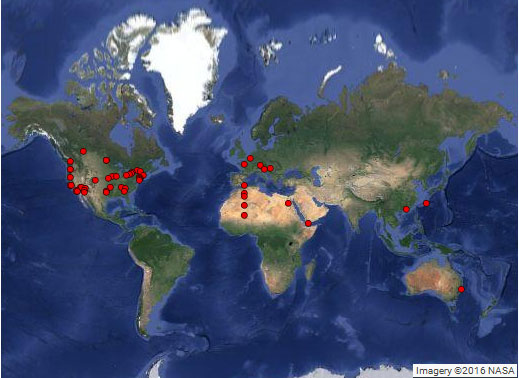

With over 60 points to plot on a map, I’d hoped to see some strong patterns from our first geographic survey. Instead, while I saw a few surprises, nothing seemed conclusive at first glance.
Of course, these early map results rely on accurate reports by those who left comments, and accurate results from the mapmakers at GPS Visualizer. In addition, this is a very small sampling and doesn’t include reports from the “moving” geography sections of this site.
Here’s the world map, with one red dot per reported location from the survey:

 Almost immediately, two vertical lines stand out.
Almost immediately, two vertical lines stand out.
The first goes from about 6 km WSW of Fay, France (SW of Paris) to about 220 km west of Kidal, Mali. That line is extraordinarily straight. It’s shown on the map to the right. (Click map to see it much larger.)
The second surprisingly straight, vertical line goes from a point about 15 km northeast of Surrey, near Vancouver, Canada, to several points near Santa Cruz, California (USA).
 That map is on the left. (Click map to see it larger).
That map is on the left. (Click map to see it larger).
One location along that line was particularly surprising. On the map, it’s the northernmost red dot in California.
When I expanded the map to see local details, the location is slightly south of Yreka, California. (It’s pronounced “why-REEK-uh.”)
In that part of California, I’d expected to see a report or two nearer to Mt. Shasta, which has a long history of paranormal activity, including Native American lore and Frederick Spenser Oliver’s novel, A Dweller On Two Planets.
However, the line through northern California is considerably west of Mt. Shasta. That’s disappointing, but I’ve never explored Mt. Shasta to confirm its activity.
Several other lines cross the United States. On their own, they’re inconclusive.
Here’s the US-Canada Map. (Click map to see it larger.)

For me to take any of these lines seriously, I’d need more compelling evidence. Also, from my own ley line studies: when one genuinely anomalous line crosses a second one, their intersection is usually very active. With the possible exception of the X near Phoenix, Arizona, nothing seems promising… yet.
Line-by-line US/Canada Map
At a quick glance — not enough to reach reliable conclusions (so take this summary with a grain of salt) — here’s what I see:
Using dots on this map to construct a few lines, the most promising one (Line #2) passes through Arizona. Even that isn’t impressive, though it includes Portland, Las Vegas, and Phoenix, and seems to pass through Area 51. Due its the Las Vegas and Area 51 connections, I’ll explore this line further.
Line #1 includes the “hot spot” near Santa Cruz, plus Los Angeles and San Diego. I haven’t spent much time in Santa Cruz, and nothing about Los Angeles would surprise me, but San Diego has always seemed fairly benign.
Line #3 connects Denver and multiple spots in Arizona, but entirely misses some of the most legendary (anomalous) locations in South Dakota.
Line #4 (turquoise) connects several Canadian locations I’ve studied. It continues through Detroit, a somewhat turbulent city, and then approaches El Paso (TX), which no one reported. So, that line has some potential at its northernmost points, but — so far — that’s all.
Line #5 goes through Atlanta (GA), Nashville (TN), and Marshalltown (IA). I need to compare it to my ley line maps of Georgia.
Line #6 tracks through Vermont, New York City, and eastern New Jersey. Due to the density of population along much of the line, it’s difficult to separate geography from history, but I’ve studied many locations along that line; it could be useful.
Conclusions
At the moment, I feel that the points and lines indicate where site visitors are or have been, and that’s all.
I was hoping for clearer results.
Of course, the sampling was tiny. It’s too early to close the door on geography or even ley lines helping us understand (or even predict) the Mandela Effect.
Also, I didn’t plot all possible lines. For example, a line connecting Brussels (Belgium) to a point slightly west of Port Macquarie (Australia) might offer some insights.
I haven’t entered data from articles about “moving” geography, either.
What’s next for my geographic studies:
- Verify this world map. Make sure the locations (reported points) are correctly placed.
- Take a closer look at the two vertical lines on this early map.
- Add points from geography-related comments at this site.
- Plot additional points & lines based on the IP numbers of the first 200 (or so) people to find this website and comment at it.
- Look for additional points (on or off existing lines) that fit my ley line theories.
- Compare all lines with vile vortices and my own ley line maps.
If you’d like to study this yourself, here’s a TXT file with the latitudes and longitudes, followed by point numbers for use at GPSVisualizer.com and similar mapping sites: http://mandelaeffect.com/wp-content/uploads/2016/02/MEGeo61-6Jan2016.txt (You may want to check it against comments at the survey post, for typos.)
If you see data or “coincidences” I missed, or if you pursue this and uncover anything helpful, leave a comment. (Mike H., I’m especially interested in how these lines relate — or don’t — to your geography patterns.)
Hi there,
I missed out on the original survey post before it was closed, but seeing these results I find myself compelled to give my coordinates…given they go right along with the vertical line on the west coast of the US, and perfectly so. Also, I’m seeing longitude -122 showing up all over the place.
Firstly, I was born and raised in Santa Cruz county-in fact, very close to the Mystery Spot (37.016576, -122.001194), which I saw mentioned here and in the Sun, Moon and Stars thread. I have also visited the attraction several times. The exact coordinates for the home I spent the most years at was (37.060018, -122.003433), and another of the several places I lived in the area was (36.987643, -121.960269). As I child, though I was quite unaware of the Mandela Effect, I was confounded by memories I had that family members did not share, that differed from mine, or did not happen at all according to them. I would bring up an event or memory just to be told I was remembering it wrong or that it never happened. Mostly it was just chalked up to a vivid imagination by my family and by me as just vivid dreams I was confusing with reality. It confused me-and I was a very smart, aware youngster with high grades and in advanced classes.
Secondly, the Mandela Effect was brought to my attention in August 2015, and starting then I am beyond a doubt convinced of certain memories that completely absolutely changed in my memory and don’t fit in with this reality. The coordinates for my location when this all happened and I went crazy with research for weeks, which I missed out on submitting to your original survey: (37.747548, -122.48708). Also, when I first thought I literally experienced a “timeline shift” before I was specifically introduced to the Mandela Effect and the fact that many others had experienced reality changes etc. I was across the SF bay at coordinates (37.816056, -122.275053).
Thirdly, I’ve experienced some strange timeline-shifty things further north as well in Southern Oregon this summer and thought it was interesting to note (thinking again of the Mystery Spot, the recurrence of longitude -122, and the vertical line that showed up with your geography research) that the Oregon Vortex (a place very similar to the Mystery Spot) is also within a degree of the same longitude at (42.492999, -123.08503). That is also an area where I’ve noticed folks mentioning in other threads about things shifting along I-5 at Grants Pass (42.439007, -123.328393) and Ashland, OR (42.194576, -122.709477) area.
Though you mentioned you didn’t really get any replies from people in Mt. Shasta, that “root chakra” of the earth and energy rich area is indeed right there at (41.408746, -122.182045).
Feel free to edit or delete-just thought I’d add since I’m seeing, as are others and yourself, a pattern around longitude -122 (Portland, Seattle, and Vancouver are also within a degree of -122 longitude).
Happy 2016 to all,
~S
Sibsiz, this is tremendous information and nicely detailed. Thank you!
Yreka, CA is very close to Mt. Shasta. There have been reports pointing to that area. Mt. Shasta City itself is a pretty small town of ~3500 (estimated).
DG, I lived in northern California (north of Sacramento) for about seven years, with extended time in Los Angeles. So, I’m familiar with much of California, including the proximity of Yreka and Mt. Shasta. However, for ley line purposes, they’re too far apart to suit my standards. However, if you know of anomalies in Yreka itself (or within a mile of it), please post info and links, if you can.
Fiona , as far as straight up data, there are 8 reports out of 58 at 33 degree latitude. And 9 at either 42-43 latitude. As for longitude 7 at 122 degrees, 7 at 96-97 degrees. There are a few others , 111-113 has a decent cluster. I’m thinking more in bands latitude and longitude wise. Checking too see which colliders are where. Also some of the radio freq. patterns we have talked about before. GWEN, Microwave, and VLF might prove interesting with the clusters.
There are a million ways to go with this. Many would be pure speculation, and goose chases. But I’m trying. Not that it means anything ( I don’t think)., but for example 122 added is 5 which is the letter E, for those inclined to go that route. I thought maybe the other vowels numerical values could be Lat. – long. Coordinates. Just grasping of course.
Also checking things for example like the Columbia / Colombia geography letter anomalies. Reminds of Lafayette, and how many strange things happen around that name. Possibly colors could come into play with the numbers, looking for towns with Red or Blue in the names, at those coordinates.
I did notice also for example, the vortices , if you continue a straight line from the ley lines, many pass through the vortices. Still going through the data, does anything I said mean something? Probably not, but it interests me when I see patterns emerge, even if just by random chance.
I apologize also too everyone, I’m typing this on my iPad. My home PC is out of commission right now. Mike H.
Brilliant, brilliant, BRILLIANT… as usual, Mike! You’ve given us quite a list to explore, researching this topic. Thank you for all that you do. Really.
Also, I hope your PC is repaired, soon. I’m in the middle of transferring all of my files to a new computer, so I’m sympathetic. (Half of my files are on the faltering computer, and the other half on the new one. I’m hoping to blast through the file transfer this weekend.)
The vertical line in North America might have been created because there are four major cities on that line; in many cases, maps plotting the distribution of something are just glorified population maps, and this might be a case of that.
jh, populations will be factored into more detailed research. I think that’s a given.
Perhaps you can tell me which four major cities have reported points on the North American line. As I see it, the line starts near (not in) Vancouver and goes through Portland. It concludes near (not in) Santa Cruz, but misses Seattle, Sacramento, San Francisco, and San Jose.
The fact that Mt. Shasta didn’t show up on that line was a red flag for me. It suggests that this line — like all of them — will need far more research and supporting data. And that’s supposing that any of these lines might help us understand the Mandela Effect.
Also, both the North American and Euro-African lines go through large expanses of very rural landscape. In many cases, the points aren’t major population centers.
Line #1 goes through Santa Cruz, south of San Jose. Then it’s north of Los Angeles, which gets rural in a hurry, but several points are southeast of Los Angeles, an area which is considerably more populated. So, I’d need to refine that map — using more specific details and narrowing the line to about 1/4 mile or less (if possible) to reach any conclusions.
Still, as I said, it’s too early to decide much of anything from the limited data available from that one, brief survey. In fact, I haven’t had time to compare these lines with a few similar lines from my (paranormal) ley line research. For all I know, the Vermont line (#6) may be a perfect extension of my main NYC line, and the Atlanta-Nashville line (#5) may be a direct extension of one of my Atlanta ley lines.
I posted these Mandela Effect maps (and the data points) because several members of our community are good at spotting patterns, markers, and other anomalies that I might overlook. I hope I’ve made it clear that this is very preliminary research.
I didn’t contribute any points to the map. Which makes it kind of spooky how near the “Phoenix X” I live. I’d be really interested to know if that cross point coincides with a point of known “paranormal” activity in Arizona…there are lots of them.
It’s crazy to me how close that light blue line is to Rolla Missouri and St. James Missouri where I had a lot of paranormal activity surround me on a near constant basis when I lived there.
Zoe, can you be more specific? Can you share links to others’ reports of paranormal activity in that area? Due to a high water table — coincident with many paranormal reports — much of Missouri is likely to report anomalies. What I’m looking for are reports specific to that line, and dramatically fewer reports within about 50 miles.
My Mandela Effect lines are fairly wide at the moment, and they need refining. But, to refine them accurately, I need additional anomalies to prove or disprove each line’s validity. For that, I need events and GPS points.
Thanks!
I’m noticing a horizontal line that isn’t marked, going from LA/San Diego to Phoenix to just north of Dallas, and even extending across to the African continent. This is roughly the path of the bright light that was explained as a “missile test” back in November: http://abc7.com/news/hundreds-report-mystery-light-flying-through-sky/1073739/
What’s interesting is, the same phenomenon was reported on the same day in the same area in 2013. That time, it was “a meteor”. http://fox6now.com/2013/11/07/bright-light-in-the-sky-spooks-many-in-southern-california/
I’d have to do some additional searching for the videos I saw on YouTube that people had uploaded of the two incidents.
Excellent, S, thank you!
Those two line clusters are very interesting. If you continue the lines all the way around the globe, what other locations do they cross?
That’s a very good point, Vivienne! I’m knee deep in work for the next few days. If anyone else is able to track these two lines, globally, please share what you find.
Hi just to briefly comment on what Mike H said, I had missed out on the original survey, however I was born in a town called Redruth, 50.2330° N, 5.2240° W but grew up in the next town 50.2130° N, 5.3000° W, South West England, where I had similar experiences like sibsiz of memories that differ from other family members.
I\\\’m currently living here 53.8608° N, 9.2988° W
This is some nice data Fiona. My immediate thought looking at the plot points was…ethnicities/ethnic background of the population. A funny site I just pulled up “FIND OUT IF YOUR STATE IS AMERICA’S PAST OR FUTURE” (http://labs.time.com/story/census-demographic-projections-interactive/).
I have a ton of bias, so it is a bit hard for me to explain at this time. Nonetheless, I think that the power of to change our perceptions/world lays within us with perhaps some having a greater ability than others. As a group, the change can be amplified exponentially and perhaps the electromagnetic connection (ether, circuits in the brain, telepathic capability, etc) is a result of what is being seen.
Mike mentioned the point of vortices but I am not quit sure where these are…?
I zoomed in on the US map with the 5 lines and noticed the a red dot wasn’t on the location I gave, but line 4 goes straight through my town. Another dot might help in your research.
Side note: one of the largest (if not the largest) supercomputers is located here at the U of I.
I am very interested to see that light blue line so close to where I live. I became aware of ME early Sept 2015. I have since been documenting as many memory discrepancies as I can remember having in the past. Also, I have noticed you are interested in the paranormal aspect? The paranormal have been a part of my life for as long as I can remember. This area is saturated with it. I apologize for being vague. I didn’t want to fill this comment with observations. After seeing that light blue line, I just wanted to make a quick comment about my location, in case you would be interested. 41°17’12.9″N, 84°21’42.2″W or 41.286912, -84.361713. Thank You.
Thanks, Michelle A! My roots are in paranormal research, mostly ghosts and faeries, though I think those are simply convenient labels we use for certain types of phenomena, rather than a definitive identification of what’s causing the effects.
I grew up in and around Santa Cruz, CA. My life has been full of strange incidences. Up until recently I was branded as crazy by my family and friends. Then things started to happen with people around me. Skeptics became believers. My atheist sister was witness to a major incident 5 years ago in Corralitos on Christmas night (midnightish) where my fiance noticed an unusual light above a redwood grove. He flicked his lighter several times and we watched the light go from space, into the tree tops.The air stilled around us, except in those trees. They began to sway and we heard high-pitched child laughter. My fiance began flicking his lighter and the trees stopped moving. A light flashed in response to his flicking. At that point I felt more fear than I have ever felt before and made them both come inside with me. After much protesting on my part, they convinced me to go back outside. It was silent and menacing. Then a flash of light burst from the treetops back into the sky. My sister was both terrified and in shock as many beliefs she once held were destroyed that night. This is one of MANY experiences I have had. But I have seen (call me crazy, but I will swear by my memory):UFO’s, faeries, gnomes, trolls, ghosts, and bigfoot. I was not alone during most of these. I have documented some of these with the local Bigfoot Museum. Please contact me if you have more questions. Also, STEIN not STAIN.
Great descriptions, Amber! And I’d believe anything I heard about California. (For decades, I’ve heard weird tales about Interlaken and Watsonville.)
Your story was exceptionally evocative. Not necessarily Mandela Effect, but odd enough for me to note as a data point. Thank you!
Hey all. I’ve been lurking for a while now, but I missed the poll when it was open. I’ve got two coordinates and the stories to go along with them.
First coordinate:
Latitude: 35.096959 | Longitude: -80.714234
My childhood home. I was seven when I first had a Mandela moment. Princess Di’s funeral was on. I think it was hers, anyway. Never much kept up with the aristocracy. As of right now, I can’t remember exactly what it was, and nobody around here remembers anything about it, but the feeling of… Presque vu?… was so strong as to imprint upon me that it was not a natural feeling at all. I’m sure I’d had Presque vu before, and I know I’ve had it since– so I don’t feel entirely comfortable explaining it away with that, though that may be a possibility.
The other reason that I remember this so vividly is for a reason that borders on the paranormal or supernormal. I awoke in bed at an unreasonable hour. My door was open (which was quite unusual, as I have always had strange issues with open doors, as you’ll soon figure out). Now, this wasn’t an incident of sleep paralysis; I could move fine. I felt myself breathing and was sitting up and whatnot. I looked out into the hallway, and there was a dark void in the middle of the doorframe’s field of view. The hall light stopped at it and continued on the other side. And there in the center was a radiant white face. Not white like Caucasian. Kabuki white. The eyes glowed yellow/red/orange/octarine?, and the wide red lips opened to show yellow teeth. And then it was gone.
Quite disconcerting, but in the long run, both incidents are equally vivid to me. And here’s where things really start to get weird.
2010
I saw the {being? Timelord?} again (I’m starting to think that it may be connected, for reasons you’ll see).
Here:
Latitude: 35.071726 | Longitude: -80.772058
Or, approximately there, anyway. I was standing vigil in the cemetery (don’t ask) and it phased in to being adjacent to me. The way it was looking at me, it knew me. There were also a pair of disembodied legs walking about. That seemed more comical to me than anything, but they were warped. Almost like an incomplete shadow passed over a sewer gate. Not too much to go on on this one, but the Presque-super-friggin-vu was there as well.
And now to tie it all together:
Latitude: 33.940955 | Longitude: -78.003406
On the same day, at the same time, in a different cemetery on the other side of the state, the woman who I would end up marrying saw the exact same thing. (She was just walking by it at the time. She was never as weird as I was.)
The feeling that she described was one of primordial dread and existential questioning. So, similar? I guess? Anyways, she may or may not have had actual, (para?)physical contact with the being.
The experiences that I’ve had (which are super weird and very numerous) may or may not be related to the Mandela phenomenon, but here is a question I will posit to you guys:
Have any of you had similar experiences with Paleface? I’ve been searching for answers for the better part of 20 years, and I feel like I may finally be onto a rabbit trail.
Fascinating, Joe, and I definitely appreciate the location details… thank you! That’s an extraordinary set of events.
I can’t say I’ve encountered anything like Paleface. The description is distinctive, so I’ll need to dig into my reference books to see what I can find.
The Kabuki white intrigues me, not just because it’s so odd, but I’m tempted to look at this from the other end of the microscope: I’ve often wondered why multiple cultures came up with the odd, wholly-white face paint concept. It’s creepy looking. When lead is the means, it’s deadly… literally. Yet it popped up in cultures completely separate from one another.
I know that Asian “ghosts” can have the white face, far more extreme than the “deathly pallor” described in Western ghost stories. Other than that… I’m baffled.
That may not be Mandela Effect, but it’s one of those lingering anomalies that’s interested me. And I love a good rabbit trail, anyway! LOL
Joe- a similar thing happened to my fiance and I with a menacing figure in the doorway. Eyes were red, teeth yellow, but the face was dark and horrible. We were staying at a family member’s house and when it happened. I woke up afraid and when my eyes located the figure I felt paralyzed. I told myself it wasn’t real and after awhile it was gone. The next day I mentioned that I thought I had had a nightmare about the room we slept in and recalled what I thought was a bad dream and my fiance paled and said “you saw that too?” . Not the same exactly as your palefaced apparition, but I thought I should share. Happened @36.9860097,-122.0186835
Here’s another tool to use in comparing sizes of countries [at the moment] called ‘The True Size of…’
http://thetruesize.com/#?borders=1~!MTQ5NjExNzc.MzY3NjA1NQ*MjU3MTU3OTE(NDAzMjkx
I also missed the first survey. My coordinates whenever I first realized that the world was different from what I remembered was (35.865714, -83.004046) around Oct 20th 2015. After looking at the Map with the lines in the US I realized something that was quite amazed. There is a horizontal line that is not drawn and it goes through my point and a few others including Nashville (TN), Las Vegas (NV), and a few others . I have never left a comment on this site because I have been trying to prove myself wrong what I remember but it never seems to work. When I first realized the changes I lost myself in research for a good week and a half.
The US map with the lines looks like vortex mathmatics.